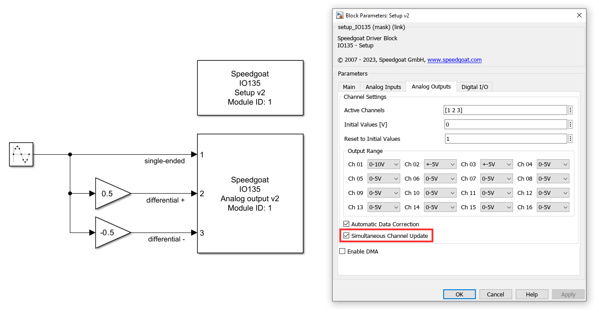
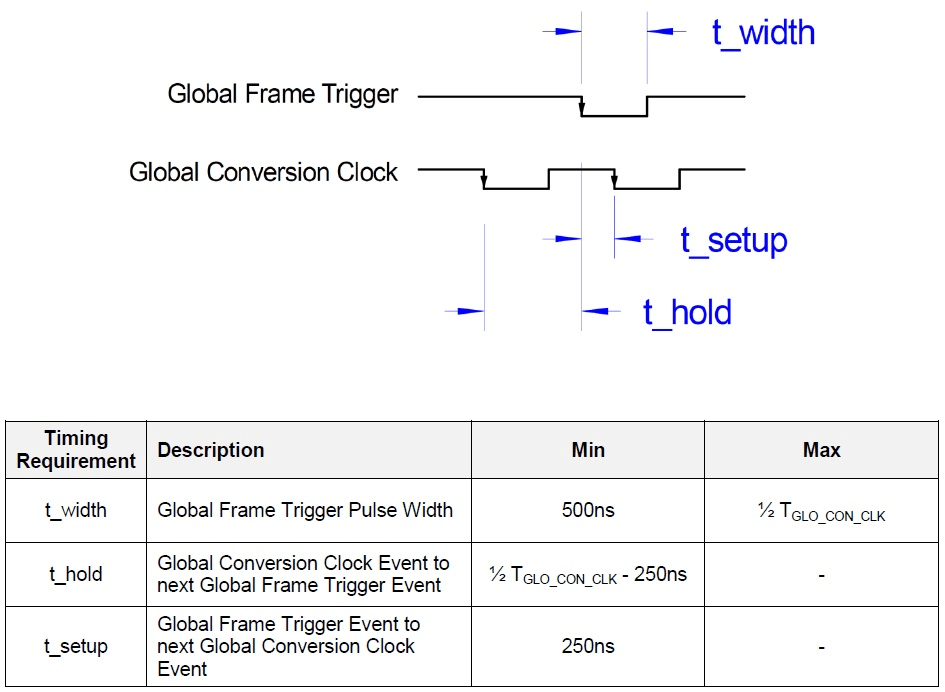
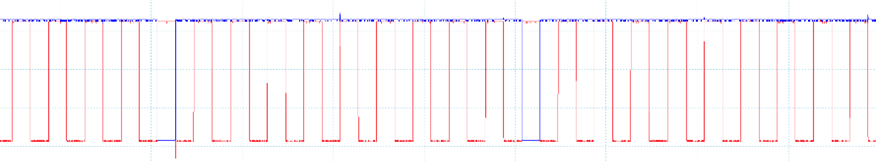
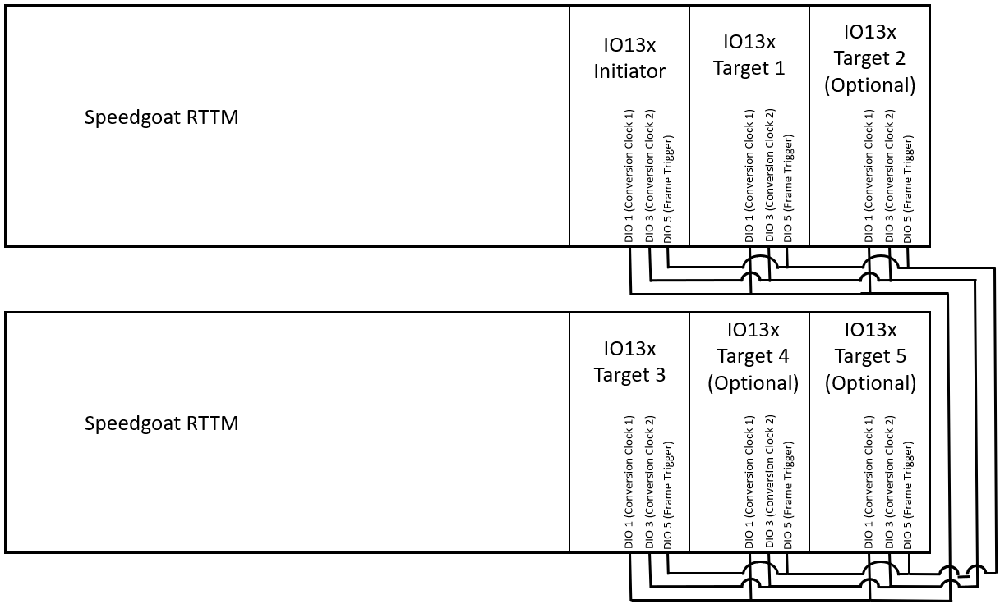
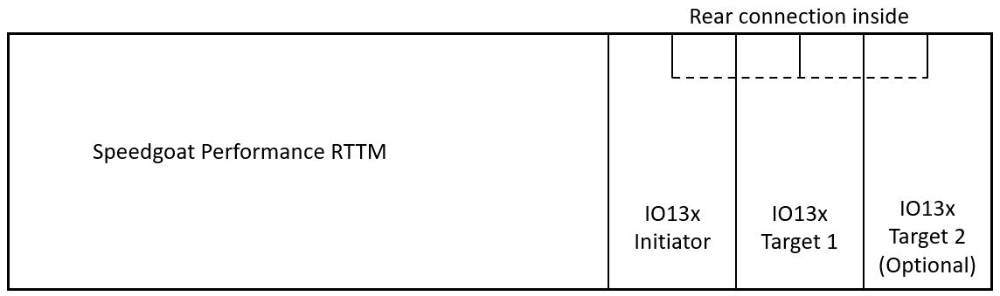

IO135 Usage Notes
IO135 Usage Notes — Usage information about the I/O module
DMA Setup
If DMA is enabled for analog input, analog output or both, then the model or the asynchronous subsystem where the module is located must be triggered by the module's interrupt.
This is required so that the sample hits of the blocks are synchronous to the module's DMA engine.
In DMA mode, the model must contain an Interrupt Setup block that triggers a subsystem or the model. Refer to the block documentation for more information.
Output DMA Latency
This note shows the difference between the two configuration options for the latency of the Analog output block in DMA mode.
The configuration is defined in the analog output tab of the Setup block.
Latency as small as possible
If the latency is kept as small as possible, then the module will start to output values immediately after receiving a frame. However, the transmission time will vary, meaning that the delay between the sample hit of the model and the change at the output pins is not constant. If both the analog input and output use DMA, then the latency between measuring a value, processing and writing the value to the output will vary.
If the DMA transfer, during one sample hit, requires more time than the previous transfer, then the outputs will remain on the last value until the transfer has finished.

Latency until next frame
If the latency is fixed to the beginning of the next frame, then the analog outputs will only start to output the data of the frame at the next sample hit. The delay between the sample hit and the outputs, or between the analog inputs and the analog outputs is therefore constant. There is no danger of running out of data at the outputs, however, the latency will be higher.

Frame Trigger
The frame trigger starts the conversion of analog input or output data over DMA. The advantage of operating with the frame trigger is that the data frame can be smaller than the trigger signal and the analog input and output frames can be of different sizes. Without the frame trigger, it is still possible to have different sample times for the input and output, but they must complete their frames at the same time.
The disadvantage of the frame trigger is that different conversion clocks cannot be used for the analog input and output.
Example: Input and output frames are the same size as the frame trigger
In this example, the analog input and output frames have the same size as the frame trigger. If the analog input frame size and analog output frame size are both 100 samples/channel, then the frame trigger clock divider must be 100. This results in a frame trigger with 100 conversions/trigger. With these settings, the IO135 module performs the analog conversions at an interval defined with the chosen conversion clock.
When using the frame trigger, the frames are always synchronized. Consequently, the analog input and output have to use the same conversion clock. The system latency is therefore double the time of one frame.

Example: Input and output frames are smaller than the frame trigger
In this example, the analog input and output frames are smaller than the frame trigger. The analog input frame size could, for example, be 40 samples/channel, the analog output frame size could be 60 samples/channel and the frame trigger clock divider could be 100. The result is a configuration where the system starts converting both the analog input and output samples after a frame trigger. After 40 samples, the analog input frame is full, the ADC conversions are stopped and the data frame is transferred over DMA to the model in Simulink. For the next 20 conversion clocks, the module will continue to update the analog outputs until the output frame has also finished. During the last 40 conversion clocks, the module will not perform anymore conversions. It may however load the next output frame over DMA. The whole cycle will start again after the next frame trigger.
When using the frame trigger, the frames are always synchronized. Consequently, the analog input and output have to use the same conversion clock. The system latency is therefore double the time of one frame. Shorter latencies cannot be guaranteed for every configuration.

Output Differential Signals using Single-Ended Channels
Analog I/O modules with single-ended outputs and simultaneous channel update functionality can support differential output signals. Two single-ended channels are needed to output one differential signal, and the Simultaneous Channel Update setting must be enabled. The following screenshot illustrates one way in which you can implement differential signals over single-ended channels in Simulink. Ensure that the voltage ranges configured are compatible with the output signals.

Manual Data Correction
Analog inputs and outputs can be calibrated manually by specifying offset- and gain-correction values. The correction values are set per channel and voltage range individually and are applied as follows:
Data is the digital value that would be used if the ADC Channels were ideal
Data_Corrected is the corrected digital value that has to be used with the real ADC Channels and DAC Channels
The correction values are stored as two's complement 16-bit wide values in the range –32768 to +32767. For improved accuracy, they are scaled to ¼ LSB (least significant bit). No correction is performed for GainCORR = 0 and OffsetCORR = 0. Please consult the hardware reference manual for additional information.
The calibration process is performed for an individual channel at a given voltage range. The following steps outline a procedure to calculate OffsetCORR and GainCORR for an analog input channel with an input voltage range of ±5 V. (A similar procedure can be followed for the calibration of other voltage ranges or analog output channels).
Disable data correction
Set the data correction method in the Simulink block to None
Estimate OffsetCORR
Supply a 0 V-certified reference voltage to the input channel and record the reading
Use the reading (OffsetMEASURE) to calculate OffsetCORR
Offset_CORR = Offset_MEAS/(LSB/4);
(LSB denotes least significant bit and equates to LSB = full scale range/adc resolution. Please consult the hardware reference manual for additional information.)
Estimate GainCORR
Sequentially supply -5 V and 5 V (certified reference voltage) to the input channel and record the readings
Use the readings (-5 V: voltage_m5, 5 V: voltage_p5) to calculate GainCORR
voltageRange_target = +5 -(-5); % -> 10 V voltageRange_measurement = voltage_p5 - voltage_m5; Gain_CORR = (voltageRange_target - voltageRange_measurement)/(LSB/4);
Verify the manual data correction
In the Simulink block, set the data correction method to Manual and input OffsetCORR and GainCORR
Supply some sample voltages and verify the readings. Make fine adjustments as needed
Inter-Module Synchronization Setup
With the help of inter-module synchronization, the IO132-IO135 range of modules allows for synchronous DMA usage of more than one module. Some of the possible use cases are listed below.
Conversion Signals
To use inter-module synchronization, the conversion signals must meet certain timing and voltage requirements. The requirements are listed below. Note that when inter-module synchronization is used with a module from the IO132-IO135 range, these requirements are taken care of automatically.
Conversion Clock
The conversion clock signal is an active-high pulse signal that determines the basic frequency of the data output or the acquisition of the modules.
Frame Trigger
The frame trigger signal is a divider of the conversion clock signal. It indicates the time when the DMA shifts the data in the desired direction. The first falling edge of the frame trigger also makes up the starting interrupt signal of the module.
Conversion Signal Requirements
The exact timing requirements for the inter-module synchronization are as follows:

Here is an example for the conversion signals exchanged between two IO132-IO135 I/O modules. The red signal is the conversion clock signal, the signal in blue is the frame trigger signal. The frame trigger clock divider is set to 10.

Hardware Setup
Front I/O:

When using inter-module synchronization in Front I/O mode, connect all the concerned modules' DIO 1, DIO 3 and DIO 5 lines. In a case where only one conversion clock is used, the other conversion clock line can be omitted. However, the respective DIO line cannot be used for its original purpose.
Rear I/O:

If all dedicated modules are to be connected via rear I/O connection, the DIO ports can all be used for their intended purpose. If you wish to upgrade your system to support rear I/O configuration, please contact Speedgoat to check whether your system supports rear I/O configuration.
Software Setup
Initiator and Target Modules in the Same Real-Time Target Machine
When both the initiator module and a target module(s) are installed in the same machine, inter-module synchronization must be activated to use DMA on all modules.
Initiator and Target Modules in Separate Real-Time Target Machines
Another use case for inter-module synchronization is the synchronous start of several real-time target machines. For this purpose, we need to set the relevant module on every target machine as model trigger. We then need to start the real-time target machine containing the target module first. The application will transition to the “running” state, without the model execution starting. This only happens when the machine gets the Frame Trigger signal from the real-time target machine containing the initiator module. All connected modules will then start to sample and output synchronously, on different machines.
PWM Signal from an External Source or a Speedgoat Configurable I/O Module as Synchronization Signal
If the aforementioned conversion signal requirements are met, an external source or another module present inside or outside the dedicated real-time target machine can be used to trigger the IO132-IO135 modules set to target mode. Note that the exact bus/slot number must be specified at every instance to use the IO132-IO135 as interrupt trigger of your model or subsystem.